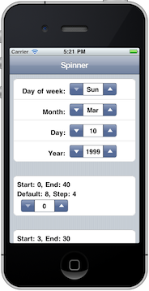
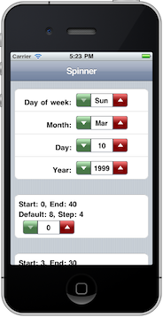

The spinner control allows you to present the use with a set of values that he or she can cycle through using the increase and decrease buttons on either side. The spinner's values can be a set of strings or a range of numbers. When the spinner is initialized with a range of numbers, you can also designate a step value which the spinner will use to increase or decrease its value. Whether setting the spinner's value to string or numbers, you can also set a default value. If no default value is passed, the spinner will be set to the first value of the set of strings or the first number in the range of numbers.
You can hand code a spinner in your markup, or insert one dynamically.
Example:
// Javascript to dynamically insert a spinner
$("tablecell.firstchild").insert(<spinner id='#spinner1'></spinner>");
To initialize a spinner, we pass $.UISpinner an object literal with the values to create the desired functionality of the spinner.
$.UISpinner({options here});
To initialize a spinner, you need to identify it to $.UISpinner by passing in a valid CSS selector. This might be a unique id, or class, or any type of CSS3 selector.
$.UISpinner({ selector: "#months"});
But you also need to pass in what type of values you want the spinner to use.
$.UISpinner({
selector: "#months",
range: {values: ['Sun','Mon','Tue','Wed','Thu','Fri','Sat']}
});
To create a spinner with a range of numeric values, you pass the values for the start and end values:
$.UISpinner({
selector: "#date",
range: {start: 0, end: 31}
});
If you want, you can set a default value for the spinner.
$.UISpinner({
selector: "#months",
range: {values: ['Sun','Mon','Tue','Wed','Thu','Fri','Sat']},
defaultValue: "Mon"
});
$.UISpinner({
selector: "#date",
range: {start: 0, end: 31}
defaultValue: 10
});
For a numeric spinner, you can set a step value which it will use to increase or decrease its values. The spinner created by the code below will step forward and backward by adding to and subtracting from the spinner's value by 4.
$.UISpinner({
selector: "#range1",
range: {start: 0, end: 40},
step: 4
});
By default, the spinner's increase and decrease buttons have the standard bluish look of all uibuttons. By passing in a class value, you can provide custom CSS to define a custom look. To target the first button you can of the CSS3 selector "first-of-type" and for the last one: "last-of-type". If all you want is to change the color of the buttons, you can pass in "ui-custom-tint" along with your class. This way, your class only needs to define a background-color to colorize the button:
$.UISpinner({
selector: "#date",
buttonClass: "ui-custom-tint green",
range: {start: 0, end: 31},
defaultValue: 10,
});
And here's the CSS for the above classes:
#spinner1 > uibutton.green:first-of-type {
background-color: lightgreen;
}
#spinner1 > uibutton.green:last-of-type {
background-color: red;
}
Here are the spinners with the default look and the custom look:
 